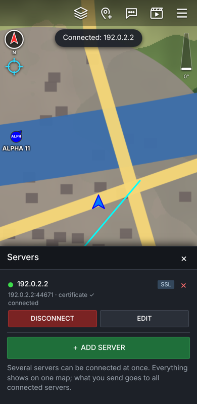
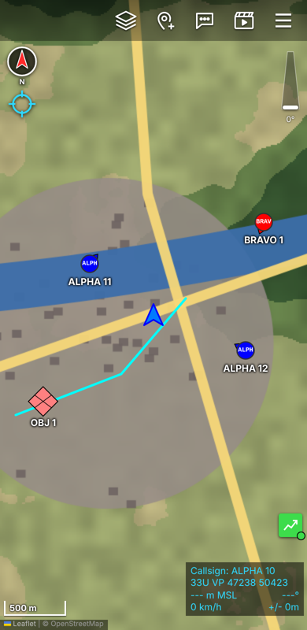
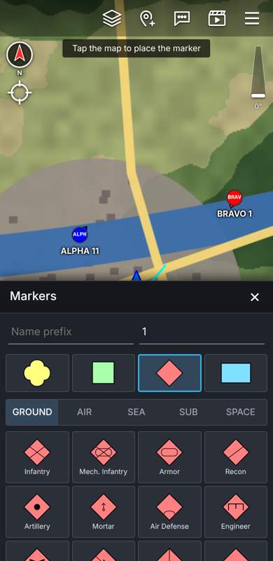
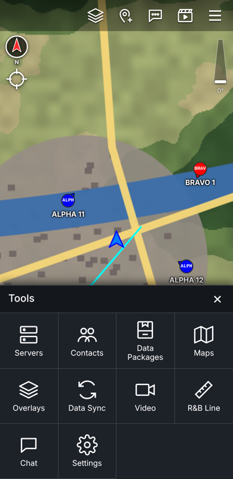

Your login details
Callsign
Team
Role
Server
Port
User
Password••••••••••
Callsign, team and role are set by your administrator and are applied automatically when your device connects.
Truststore password (if asked): atakatak unless your administrator told you otherwise.
Set up your app
- Install ATAK-CIV from Google Play and open it once (allow location).
- Tap ☰ → Settings → Network Preferences → Manage Server Connections.
- Tap ⋮ → Scan QR Code and scan this code (on the same phone: take a screenshot and use Import from image, or print the page).
- ATAK requests its certificate and connects. A green indicator (bottom right) means you are online.
- Disconnect and reconnect once – the server then sets your callsign and team.
Menu names can differ slightly between ATAK versions. Manual setup: Add server → address , protocol SSL, port , tick Use authentication and Enroll for client certificate, enter user and password above.
- Install iTAK from the App Store and open it.
- Tap Settings → Network → Servers → + → Scan QR and scan this code.
- Enter your user and password from above when asked – iTAK fetches its certificate.
- In Settings set your callsign to and your team colour to .
- Scan this code with the phone camera – or on the phone tap Open TAK EUD
- The app opens with your server already set and requests its certificate automatically. If asked about an unknown server certificate, tap TRUST (or load the truststore first).
- Add it to your home screen: Android Chrome ⋮ → Add to Home screen, iPhone Safari Share → Add to Home Screen.
- Green square bottom right = connected. Tap the marker icon at the top to place markers, the menu icon for everything else.




What you can do with TAK
See your teamLive positions with callsign and team colour.
Mark the situationPoints, units (MIL-STD 2525), routes and areas – shared instantly.
ChatAll chat rooms or direct messages.
VideoWatch helmet cameras, drones and phone streams.
Data & mapsData packages, overlays and missions (Data Sync) from the server.
OfflineSave map areas and keep working when the network drops.